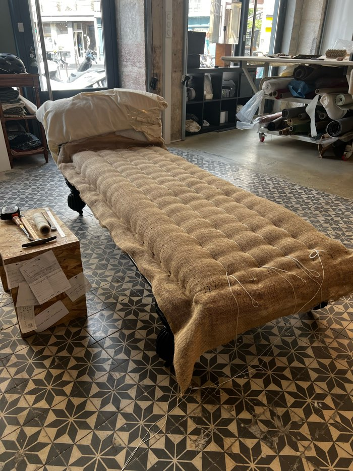
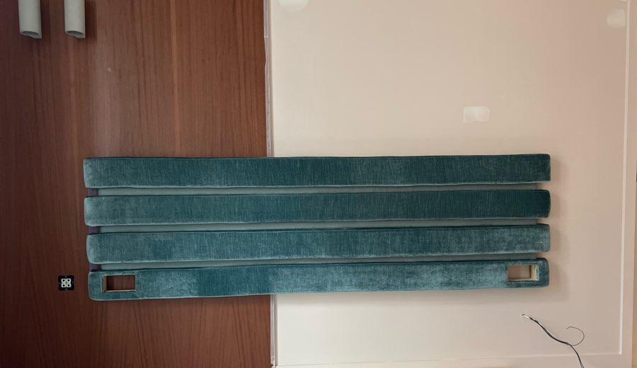
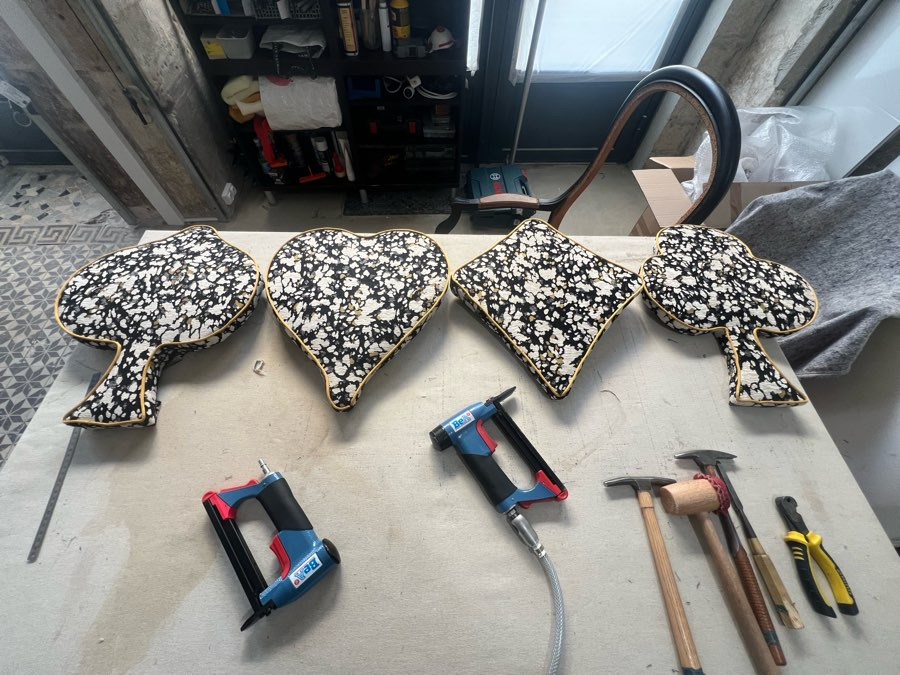

Prestations
De la restauration d'un siège Louis XV à la création d'une banquette, en passant par la confection de rideaux pour un appartement haussmannien, chaque projet reçoit la même attention.


Réfection traditionnelle
Restauration de sièges anciens dans le respect des techniques d'origine : sangles, ressorts, crin animal, finitions à la main.
Fauteuils, bergères, cabriolets. Banquettes et lits de jour. Capitonnage. Passementerie.


Création sur mesure
Des pièces uniques pensées pour vos espaces. Les matériaux, les textures et les coloris sont choisis avec vous, en accord avec le lieu.
Banquettes. Têtes de lit. Assises et dossiers en forme.


Décoration et couture
L'habillage textile de vos pièces : rideaux, voilages, stores bateau, panneaux japonais, coussins, tentures murales.
Plis flamands, tête wave, œillets. Stores bateau. Velours non feu.
Un siège à refaire, des rideaux à créer ?
Le devis est gratuit, la réponse arrive sous 48 h ouvrées.